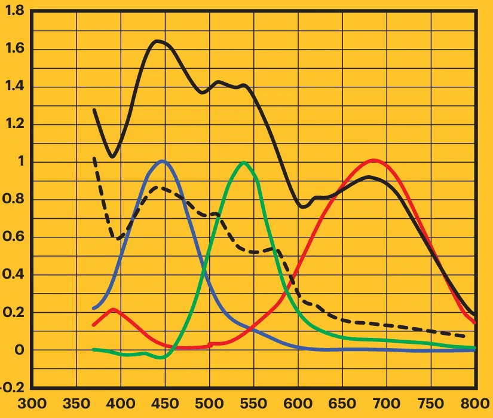
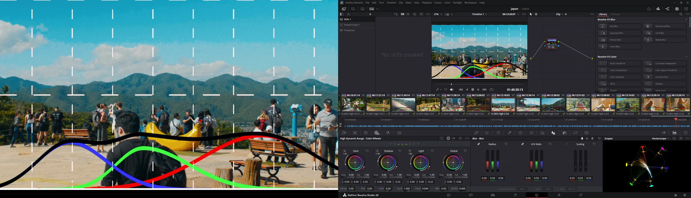
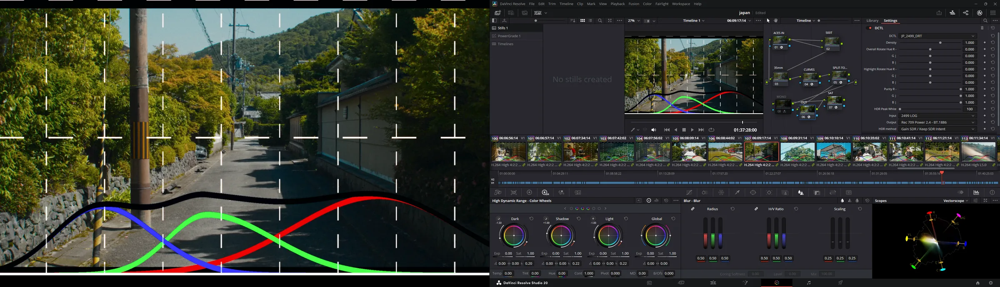
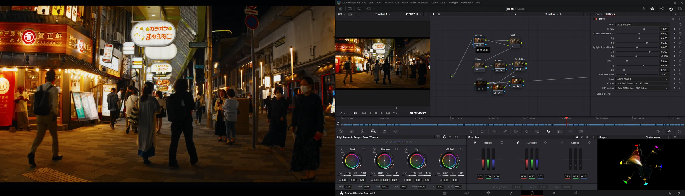
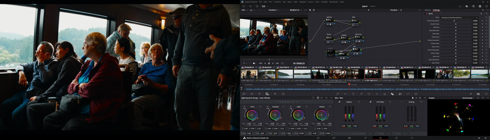

I've been experimenting with recreating Kodak VISION3 500T (5219) in DaVinci Resolve, using Thatcher Freeman's dye simulator DCTL. My goal was simple: copy the curves from Kodak's own whitepapers and see if I could get an accurate film look. Spoiler alert — it wasn't that simple.
The Problem: Too Yellow, Too Green
I started by plugging in the standard dye curves from Kodak's technical documentation for various stocks. I tried to be as accurate as possible but I couldn't shake the yellow-green cast it generated.
Node 1 – Primary Dye Curves (First Attempt)
Started with Kodak's published spectral peaks:

Keep in mind Blue inverted is Yellow, Green is Magenta, and Red is Cyan.
The Solution: Secondary Cyan Spike
Digging deeper into the spectral charts, I noticed something I had missed — there's a secondary absorption spike around 395nm in the cyan dye. When I added this as a separate node:
- The yellow-green cast had a control parameter
- During daylight shadows exhibit a "realness" quality with the cyan
This tiny spike in the UV range was the missing piece that took me too long to figure out.
Node 3 – Inversion
A basic 1 - X invert node to flip the simulated dye densities back into positive space, mimicking scanned negative film.
DCTL Setup & Results




Who Cares?
TBH idk, I'm still testing how the overlaps in dye sensitivity affect the gamut. If you have any insights or experiences with this, I'd love to hear them!